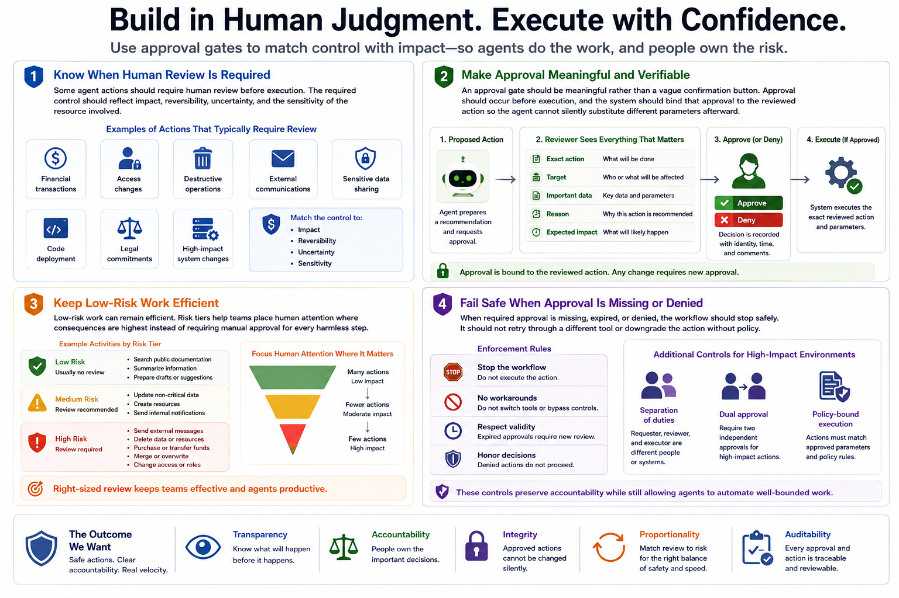

Securing AI Agents
Human Review and Approval Gates
Connecting to LMS... Progress: in progress
Version 1.0 | Date: 2026-06-21
This course provides educational information about securing AI agent systems. It is not legal advice, product-specific implementation guidance, or offensive security training.

Narration
Some agent actions should require human review before execution. Relevant examples include financial transactions, access changes, destructive operations, external communications, sensitive data sharing, code deployment, legal commitments, or high-impact system changes. The required control should reflect impact, reversibility, uncertainty, and the sensitivity of the resource involved.
An approval gate should be meaningful rather than a vague confirmation button. The reviewer needs to see the exact proposed action, the target, the important data involved, the reason for the recommendation, and the expected impact. Approval should occur before execution, and the system should bind that approval to the reviewed action so the agent cannot silently substitute different parameters afterward.
Low-risk work can remain efficient. An agent may search public documentation, summarize information, or prepare a draft without the same review required to send, delete, purchase, merge, or change access. Risk tiers help teams place human attention where consequences are highest instead of requiring manual approval for every harmless step.
When required approval is missing, expired, or denied, the workflow should stop safely. It should not retry through a different tool or downgrade the action without policy. High-impact environments may also require separation of duties or a second approver. These controls preserve accountability while still allowing agents to automate well-bounded work.